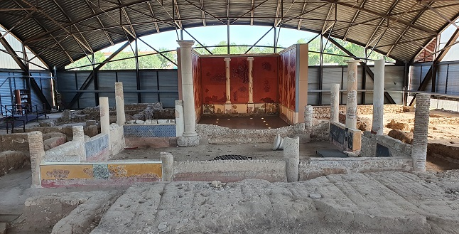
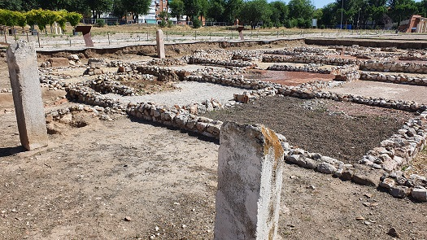

|
COMPLUTUM ALCALÁ DE HENARES
|
||||||||||||||||||||||||
|
Patrimonio de la Humanidad desde 1998 En el año 150 a.e.c la antigua ciudad celtibera de Iplacea fue invadida por las tropas romanas y pasó a llamarse Complutum. Complutum era un estratégico cruce de caminos, situada en la vía que unía Emerita y Caesaraugusta, justo en la confluencia del río Henares y el arroyo del Camarmilla. Los valiosos yacimientos arqueológicos hallados demuestran la importancia de esta ciudad en la época romana. Se conoce la existencia de dos núcleos de población; el más antiguo se localiza en los cerros que dominan la vega de Henares y el más reciente y mejor estudiado, datado en el siglo I se localiza en la vega del río Henares. La construcción de la ciudad de nueva planta data de época de Augusto, y bajo el reinado de Vespasiano obtuvo el titulo de municipium. En el siglo IV se realizaron obras de mejora en el foro y algunas de las casas privadas. Posteriormente en el siglo V la ciudad se va abandonado. Las excavaciones han sacado a la luz los principales edificios públicos del foro: con la basílica, la curia y el tabularium, un importante conjunto termal, un ninfeo, un mercado y numerosas viviendas; entre estas destacan La Casa de los Grifos, la de Leda, Cupido, Baco y Aquiles, así llamadas por los mosaicos que las decoran.
Iniciamos nuestro recorrido en la Manzana VII de Complutum, por la Casa de Marte, casa con atrio de tipo itálico. Continuamos por la Casa del Atrio, ubicada junto al Decumano III y el Cardo IV.
Seguimos por el Auguraculum, era la casa de los augures de la ciudad. Se han hallado las salas de las ofrendas, los pozos y vasijas para las ofrendas y los restos de animales ofrendados.
De aquí accedemos al conjunto monumental del Foro. El Cuadripórtico, adosado a la Casa de los Grifos data del siglo I, pero en el siglo III fue se derriba y se construye un edificio administrativo. Accedemos al Foro.
La Curia, las Termas Norte, la Basílica, el Pórtico Sur, con sus tiendas y talleres. Datan de mediados del siglo I. A la vista las modificaciones del siglo III y IV.
Continuamos por las Termas Sur construidas a comienzos siglo IV. Seguimos por el Cuadripórtico y el Mercado del siglo I adosado a la casa de los Grifos.
La casa de los Grifos fue construida en época de Augusto, siglo I, sufrió varias reformas y fue destruida a consecuencia de un incendio en la época severiana, a comienzos del siglo III. El edificio fue derribado de manera ordenada, lo que ha facilitado la recuperación de sus pinturas murales, entre otros restos. De unos 900 metros cuadrados. Tenia una taberna y dos pórticos en las fachadas Oeste y Sur. La vivienda es de una planta. Domus de estilo mediterráneo con peristilo que se abre a sus estancias. Está considerada como la mejor colección de pintura mural romana de la península. Llamada así por las pinturas de dos grifos en una de las habitaciones.
 Salimos por la casa de la Lucerna, de la Mascara de la manzana VII de Complutum y nos dirigimos a la Casa de Hippolytus.
 La Casa de Hippolytus era la sede del colegio o asamblea de los jóvenes de la ciudad en los que recaería el gobierno de la ciudad, vinculado a una fundación familiar, la de los Anios, En el colegio se unía las funciones formativas, religiosas y lúdicas como reflejan las tres parte diferenciadas de la casa; el jardín, las termas y las habitaciones de culto. La casa tiene tres fases: su construcción en el siglo I, a finales del siglo III se remodela e instala el mosaico de Hippolytus y a finales del siglo IV se convierte en necrópolis. La Casa de Hippolytus se encontraba situado a las afueras de la ciudad de Complutum, junto al cauce del río Camarmilla. Gracias a una inscripción sabemos que el autor de esta obra de arte fue el musivario Hippolytus, quien ha dado nombre a la casa.
|